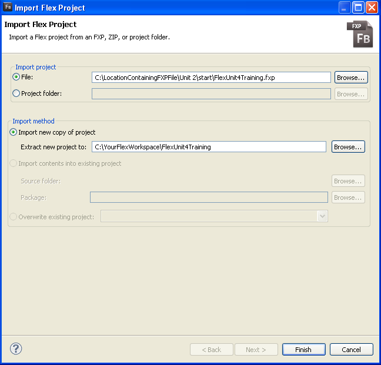
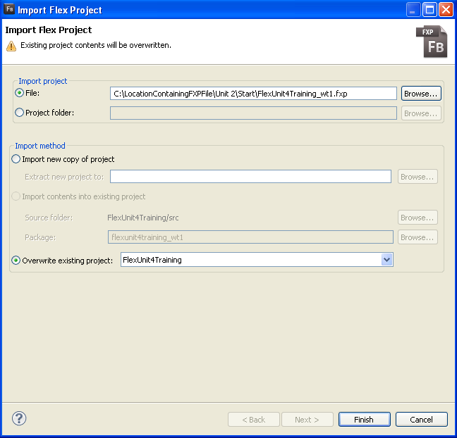
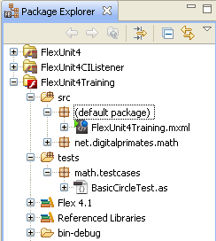
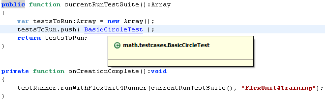
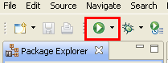
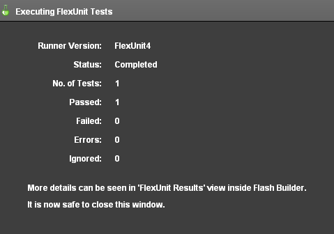

Unit 2 - Overview of Testing Terms and Terminology
 Download Unit Project Files
Download Unit Project FilesWhile FlexUnit 4.x makes it easy for you to write clear and simple tests, you have to understand some of the basic terminology of unit testing frameworks, and specifically of FlexUnit, to become an effective user of this tool.
Objectives:
After completing this lesson, you should be able to:
- Explain unit testing, integration testing, and functional testing
- Explain the role of metadata in FlexUnit 4.x testing
- Explain testing framework and fixtures
- Understand the difference between tests, test cases, and test suites
Topics
In this unit, you will learn about the following topics:
- Test Types
- Metadata
- Testing Framework
- Assertions
- Test / Test Case / Test Suite
- Test Fixture
Test Types
Testing is a broad term and is applied by individuals in many different ways. Applications can be tested for security, performance and functionality. They may be tested before they are accepted by a user or tested for international deployment in multiple locales around the world.
This course specifically deals with testing to ensure your code functions properly. In the simplest models, functionality is assured by three types of testing. Each type is performed at a different time during the development cycle.
Unit Testing
- Performed during development or immediately after
- Tests the smallest blocks of code in complete isolation
- Ensures the return values of functions are correct for expected input
- Ensures that any side effects (other aspects of a class that change as the result of executing this block of code) are correct for the expected input
- In general, you must have a unit test for each pathway or branch through your code. This means every if-statement guarantees two tests.
Integration Testing
- Also performed during development or immediately after
- Eventually, in the development lifecycle, each testable unit is likely to interact with other testable units. Integration testing tests the interaction between testable units.
Functional Testing
- Generally performed on an entire system or set of components
- Tests expected behavior for the use cases of the application
- Designed to test functional requirements
- This can often be the easiest type of test to create; however, it is not as thorough or flexible as unit testing.
This course focused mainly on unit testing but introduces some integration testing in later sections. Functional testing is beyond the scope of this class.
Metadata
Metadata provides additional information or a description of data. In Flex and ActionScript, metadata is most often used to provide additional information about a property, method or class. It can be interpreted by the compiler while building the application or by the development environment while writing code.
Examples of metadata used in Flex include [Bindable], [Inspectable] and [Event]. [Bindable] instructs the pre-compiler to add additional code to a class to facilitate automated view updates when data changes. [Inspectable] and [Event] instruct the Flash Builder IDE in expected and available configuration options. This additional information allows the IDE to assist you with code completion and compile time type checking.
To create a test using FlexUnit .9 or Fluint 1, you must extend a specific class and then name each method with the prefix test, such as testMyFunction(). Following this convention formed the basis of using these frameworks.
Unlike its predecessors, FlexUnit 4 is a metadata driven framework. Rather than using a special naming convention for tests, FlexUnit 4 allows you to decorate a test using metadata.
[Test]
public function shouldDoThis():void {
}
This use of metadata removes the need to extend a specific class, or name your methods in a specific way. It provides more flexibility and opportunity.
There are many metadata tags such as [Test], [Suite] and [Theory] used to mark classes, methods or properties when using FlexUnit 4.
Testing Frameworks
You can test without a testing framework, and you likely already do. Each time you write a piece of code, execute it and check for an expected outcome, you are performing the same tasks as a testing framework.
A testing framework only exists to automate these manual operations. It codifies assumptions about the way a piece of code will work into a series of test method, including the code's expected return value, side effects and exceptions in a given situation.
When those methods are executed, the testing framework verifies the result of the execution and reports the results. This provides a standard way in which users can execute and share tests.
FlexUnit.9, Fluint and FlexUnit 4.x are properly referred to as testing frameworks. The same is true for ASUnit, or the JUnit and TestNG frameworks written for Java.
Assertions
Assertions are a tool used to reveal whether or not a piece of code is working as expected. They take the form of a strong statement indicating an expected result. For example, if you add the numbers 2 and 3.
result = 2 + 3;
You can assert that the result is 5. You do so as you are sure that no other answer is satisfactory and that a different answer is just plain wrong.
assertEquals( 5, result );
If this assertion fails, meaning that result is not equal to 5, then you can conclude that the plus operator no longer works correctly in all cases. This is the basis of testing.
Tests
Ultimately, assertions are the atom of a test. However, an assertion is only applicable to a given condition. The assertion made in the previous section only applies because the numbers 2 and 3 were added.
result = 2 + 3;
assertEquals( 5, result );
If instead, the numbers 6 and 7 were added, a different assertion is needed, and this is the point of a test. A test sets up the necessary preconditions in order to make an assertion. Ideally, you will have one test for every possible branch in your class.
Continuing with the addition example, you would likely have tests to:
- add two positive numbers
- add a positive and a negative number
- add two negative numbers
- add 0 to a number
- add NaN to a number
- add positive or negative infinity to a number
Collectively all of the tests in a system, each making assertions, verify that the units of the system individually work as intended.
Even in the simplest cases, each unit of code generally requires at least two tests: one test to check positive results with valid inputs and another to check negative results with invalid input.
Most units will require more than two tests. It is best to test both positive and negative outcomes against a variety of inputs, strengthening the coverage of the test.
Test Cases
A test case is a collection of tests contained within one class that is designed to test related functionality. Often, a single test case tests a single class.
Continuing with the mathematics example, a test case might contain the following collection of test methods:
[Test]
public function shouldAddTwoPosAndReturnPos() {
}
[Test]
public function shouldAddPosAndNegAndReturnPos() {
}
[Test]
public function shouldAddPosAndNegAndReturnNeg() {
}
[Test]
public function shouldAddTwoNegReturnNeg() {
}
[Test]
public function shouldReturnSamePosWhenAdd0() {
}
[Test]
public function shouldReturnSameNegWhenAdd0() {
}
Again, all tests in a given case should be related, either by the fact that they test the same class or the same concept across multiple classes.
The test case may also specify the order of every test in a test case as well as exclude certain tests from running in specific circumstances. While unit tests may be ordered they should never depend on an order. In other words, if Test A must run before Test B, as Test A does some setup or precondition, you are no longer writing unit tests. Unit tests are isolated, and relationships are not a component of isolation.
[Test(order=1)]
public function shouldReturnSamePosWhenAdd0() {
}
[Test(order=2)]
public function shouldReturnSameNegWhenAdd0() {
}
As FlexUnit 4.x only executes methods marked with the [Test] metadata as tests, you can also add support methods for doing additional work in your class. This will become clearer as the course continues.
Test Fixture
The term test fixture refers to a well-known and fixed environment required to run a repeatable test. This environment, also referred to as a test context, is recreated before each test.
For example, if a given object must exist before your test can run, then that object is part of the test fixture. A fixture contains everything that must be in a known state before the tests in the test case can be executed.
[Test]
public function shouldBeBlueSky():void {
var sky:Sky = new Sky();
sky.color = "blue";
assertTrue( sky.color == "blue" );
}
In the example, the assertTrue() statement checks if the sky's color is blue. Notice that you must first have a Sky object before the value of its color can be tested. It is effectively a precondition to the test.
A fixture can create objects, set initial values, or perhaps even create substitute (you will learn to call these fake or mock) objects for use during testing. A well-formed test fixture can greatly decrease the time for adding new tests to a test case by factoring out code performed in each test to a common location.
Test cases should create all the elements required to create the fixture. No test case should ever reach outside of its class for objects instantiated elsewhere for use in its tests.
Test Suites
A test suite is used to group test cases together for ease of handling. As your collection of test cases grows, it becomes more and more convenient to group these in a hierarchical fashion.
For example, all of your addition tests are in one test case. All of your subtraction tests might be in another. You can then create a suite which includes both of these cases. You can then instruct the testing framework to execute all tests in that suite.
Suites can also be included within other suites and can be run recursively from higher level suites. This usually results in single top-level suite that runs other suites, which can run suites or test cases of their own. This allows for ease of organization as the number of cases and suites increase.
Walkthrough 1: Creating and Executing a Unit test
In this walkthrough you will perform the following tasks:
- Import the FlexUnit4Training.fxp file into Flash Builder.
- Write a single test method.
- Run a unit test case.
Steps
-
Start Flash Builder by choosing Start > Programs > Adobe > Adobe Flash Builder.
-
From the main menu of Flash Builder, choose File > Import > Flash Builder Project. Flash Builder has the ability to import pre-existing projects packaged in the FXP format as a stand-alone file.
-
In the Import Flash Builder Project dialog box that opens, click the first Browse button on the right of the screen. Navigate to the LocationContainingFXPFile/Unit 2/Start directory, and select the FlexUnit4Training.fxp file.
The screen will change to show new Import method options with either "Import new copy of project" or "Overwrite existing project."
-
If this is your first time opening the project:
Choose "Import new copy of Project" and extract the project to your Flash Builder workspace. Making sure to replace "LocationContainingFXPFile" and "YourFlexWorkspace" with the location of the FXP file on your machine and your preferred directory for Flex projects (See Figure 1).If you have previously imported the FlexUnit4Training project:

Choose "Overwrite existing project" and select the FlexUnit4Training project from the dropdown (See Figure 2).Figure 1: Importing a new project
Figure 2: Overwriting an existing project
Once the project has been imported, it should appear in the Package Explorer on the left.
-
In the Package Explorer, expand the src folder's default package and double-click the FlexUnit4Training.mxml file to open it. The contents of this file will be explored in more detail in a future unit.
Figure 3: Opening files in the Package Explorer
-
In the
<fx:Script>block, you should see the following lines:import math.testcases.BasicCircleTest; public function currentRunTestSuite():Array { var testsToRun:Array = new Array(); testsToRun.push( BasicCircleTest ); return testsToRun; } private function onCreationComplete():void { testRunner.runWithFlexUnit4Runner(currentRunTestSuite(), "FlexUnit4Training"); } -
To open the
BasicCircleTestclass, you can either browse to it in the Package Explorer (test/math.testcases.BasicCircleTest), or you can move your mouse over theBasicCircleTesttext in the line that readstestsToRun.push( BasicCircleTest ). Press control, when you see theBasicCircleTestturn blue, click onBasicCircleTest. Either way, this will open theBasicCircleTestclass in Flash Builder.Figure 4: Control Clicking BasicCircleTest
The class should read as follows.
package math.testcases { public class BasicCircleTest { } } -
Add a new public function named
shouldReturnProvidedRadius()to the class. The function needs to be marked with[Test]metadata, which is placed on the line just above the function.public class BasicCircleTest { [Test] public function shouldReturnProvidedRadius():void { } }This function is going to test a method of the
Circleclass. TheCircleobject is created by theCircleconstructor which takes an origin argument of typePointand a radius argument of data typeNumber.Circle( origin:Point, radius:Number ); -
Declare a variable named
circleof typeCirclein theshouldReturnProvidedRadius()function. This Circle should be instantiated with an origin of(0, 0)and a radius of5.public function shouldReturnProvidedRadius():void { var circle:Circle = new Circle( new Point( 0, 0 ), 5 ); }While you are typing
Circle, Flash Builder will try to provide possible choices as you type. If you choose one of the items on the pop-up menu (or use the arrow keys and press Enter on the correct option), Flash Builder will complete the name for you and perform one other very important step: importing the class.If you choose one of the options on the pop-up menu, Flash Builder adds an import line just above the class definition. This line is an import statement that lets Flash Builder know where the class you are referencing resides. You can think of import statements as more or less the ActionScript equivalent of the namespaces you used in MXML:
import net.digitalprimates.math.Circle;and
import flash.geom.Point;If you do not have these lines in your file, you have two options: You can place your cursor right after the closing e in Circle and t in Point and press Ctrl+Spacebar. This will cause Flash Builder to open the code-completion pop-up again. If there is only one matching option, Flash Builder automatically selects it and adds the import for you. Alternatively, you can just type the import statements just inside the package, outside of the class definition.
-
Just below the circle instantiation, add a line that calls to the
assertEquals()method with arguments5andcircle.radius.[Test] public function shouldReturnProvidedRadius():void { var circle:Circle = new Circle( new Point( 0, 0 ), 5 ); assertEquals( 5, circle.radius ); }If you did not use code completion, add the import statement for
org.flexunit.asserts.assertEqualsat this time. While you may be used to importing classes,assertEquals()is actually a package level function. These are functions that can be addressed directly without an associated class. While this concept may be new to many of you, it is actually used extensively in Flash Player with methods such astrace(),getDefinitionByName()andsetInterval(). -
Save the BasicCircleTest.as file.
-
Reopen the FlexUnit4Training.mxml file using the navigator view on the left.
-
Click on the run button in the upper toolbar as shown.
Figure 5: The Flash Builder "Run" Button
If FlexUnit4Training.mxml ran successfully you should see the following output in your browser window:
Figure 6: FlexUnit test passed
Summary
There are many types of tests, including:
Unit Tests
Integration Tests
Functional Tests
Performance Tests
Unit testing is about testing isolated blocks of code.
FlexUnit 4 defines a test method with the [Test] metadata.
Tests make one or more assertions.
A class with one or more tests is called a Test Case.
A Test Fixture includes all the elements needed to provide the correct environment for repeatable testing.
A Test Suite is a collection of Test Cases.